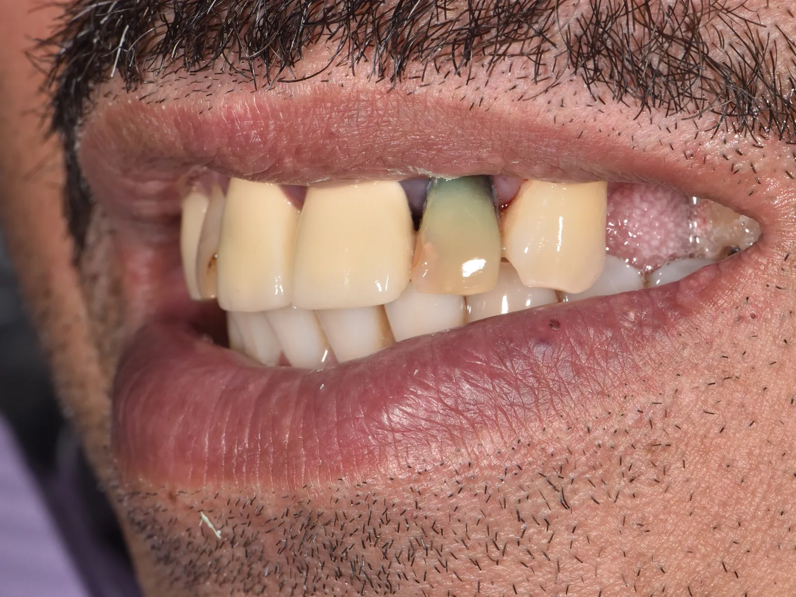

New York
Mount Kisco
39 Smith Ave, Rear LL
Mount Kisco, NY 10549
- Monday
- 9:00 am to 6:00 pm
- Tuesday
- 8:00 am to 6:00 pm
- Wednesday
- Closed
- Thursday
- 10:00 am to 6:00 pm
- Friday
- 9:30 am to 3:00 pm, every other week
- Saturday and Sunday
- Closed
Implant dentistry
One implant and one custom crown can replace a lost tooth without touching the healthy teeth beside it. It looks natural, feels natural, and is cared for like a natural tooth.
The basics
A single-tooth implant has two parts. The first is a small titanium implant, placed in the jawbone where your tooth used to be. The second is a custom ceramic crown, attached to the implant once it has healed.
The crown is made the way a traditional crown is, but instead of sitting on a filed-down natural tooth, it uses the implant as its anchor. It is the simplest implant restoration and the most common one we place.
Dr. Kwon is an implant surgeon with a Master's degree in Dental Implantology, and he teaches implant surgery to other dentists.
 Before
Before After
After
Before After
AfterWhy choose one
A bridge or a partial denture can fill a gap. An implant does a little more.
The crown is shaped and shaded to match the teeth around it, so the gap simply disappears.
Like a natural root, an implant carries chewing pressure into the bone, which helps keep it strong after tooth loss.
A bridge needs the neighboring teeth reshaped to hold it. An implant stands on its own.
Candidacy
A single-tooth implant is usually a good option if you have a healthy mouth and enough jawbone to hold the implant. Gum disease or bone loss does not always rule it out, but may need treatment first.
Only an exam and 3D imaging can show what is right for you. Dr. Kwon will tell you plainly whether an implant is the right choice, or whether another option suits your tooth better.
The process
We examine your mouth, take imaging and talk through your options. If an implant is right, planning begins right away.
A few weeks later, the area is cleaned and numbed, the implant is placed in the bone, and the site is closed with stitches. You go home to heal.
The implant needs about three to six months to bond with the jawbone. You return for follow-up visits so we can check healing and take impressions for your crown.
When your mouth has healed, the custom crown is attached to the implant and your bite is checked.
Recovery
Most people heal from the placement visit in about one to two weeks. The implant itself keeps bonding to the bone for three to six months, and it is important to let that finish before the crown is attached.
We give you detailed recovery instructions. Following them closely is the surest way to protect your result. After that, brush and floss as you normally would, and keep up regular cleanings.
For estimates and insurance, see our insurance and financing page. The price depends on your case, and we give you a written plan before treatment begins.
Common questions
The area is numbed, and most patients find the visit more comfortable than they feared. We explain what to expect during healing and how to stay comfortable.
With healthy bone and good home care, an implant is meant to last many years, often decades. The crown on top may eventually need replacing.
Sometimes. If the bone where the tooth was lost has thinned, a graft may be recommended first. Your imaging shows whether it is needed.
The crown is custom made and matched to your neighboring teeth in shape and shade. It is meant to be indistinguishable from the rest of your smile.
Gum disease usually needs to be treated first, because healthy gums protect the implant while it heals. Your exam will tell us where you stand.
Brush twice a day, floss daily, avoid chewing ice or hard candy, and keep up regular cleanings, about every six months.
Related services
Our offices
New York
39 Smith Ave, Rear LL
Mount Kisco, NY 10549
Connecticut
70 Maple St
Kent, CT 06757
Connecticut
800 E Main St
Stamford, CT 06902
Open Saturdays. Complimentary parking on site.
Book a consultation and find out whether a single-tooth implant fits your case.